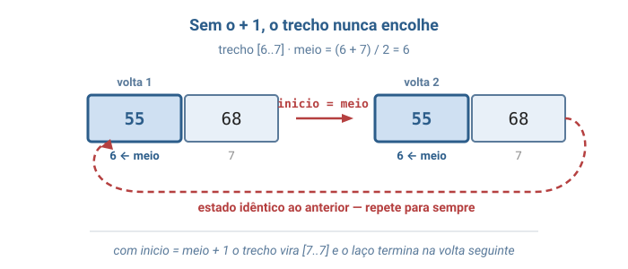
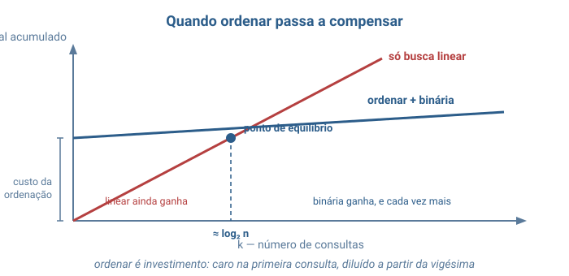
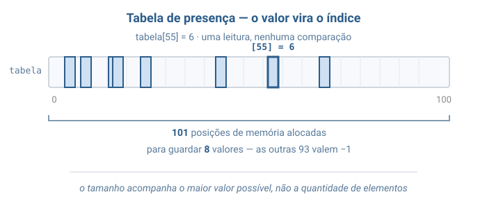
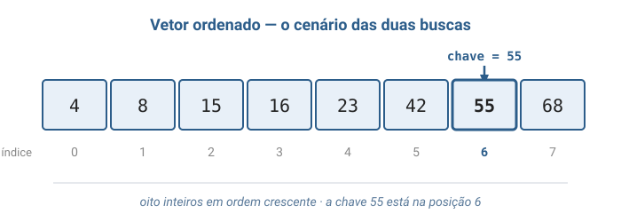
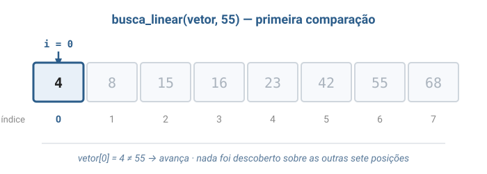
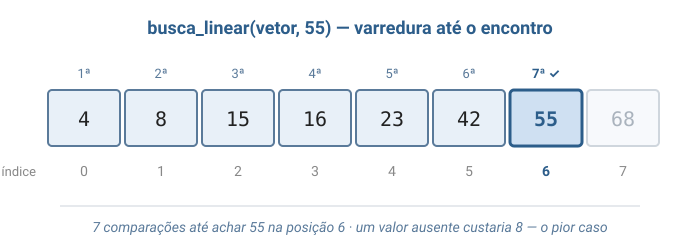
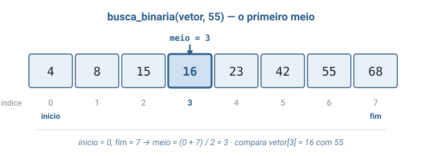
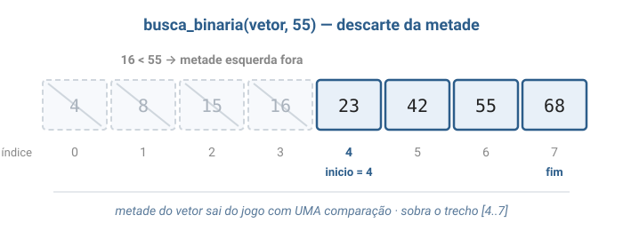
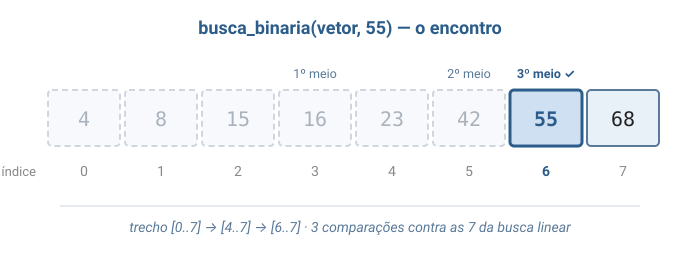
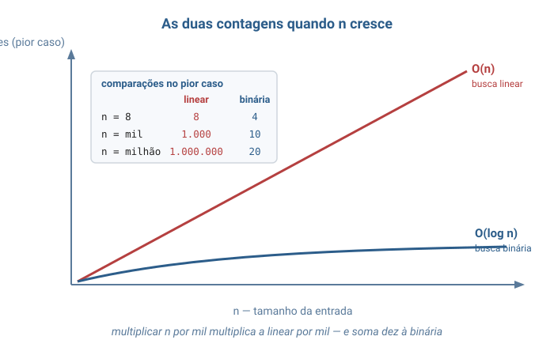

Algoritmos e Estruturas de dados
Unirios
Aula 02
Análise de Complexidade na Prática
Busca Linear · Busca Binária · O(n) contra O(log n)
Aula de implementação — a Big O da Aula 01 vira ferramenta de medição.
Como é um O(1) na prática
Da Aula 01: chegar a vetor[i] é uma conta só —
base + i × tamanho. Nenhum elemento anterior é visitado.
int valor = vetor[3]; /* uma multiplicacao e uma soma — sempre */| Tamanho do vetor | Passos para ler vetor[3] |
|---|---|
| 8 elementos | 1 |
| 1.000.000 de elementos | 1 |
Custo que não muda quando a entrada cresce: isso é O(1) — a régua com que mediremos tudo hoje.
Camada 1
Duas pessoas, um dicionário
Achar a palavra maresia. Uma pessoa vira página por página. A outra abre no meio, cai no P, e joga fora metade do livro de uma vez — depois repete.
A segunda só funciona porque o dicionário está em ordem alfabética.
Camada 2
Isso tem nome: busca
Busca (search): dada uma coleção e um valor procurado — a chave de busca —, dizer se ele está lá e em que posição.
É a operação mais executada da computação — e por isso a mais estudada.
Backes, capítulo de métodos de pesquisa · Veloso & Pereira, capítulo de pesquisa.
Duas estratégias
O mesmo problema, dois caminhos:
- Busca linear (sequencial) — percorre um a um até achar ou acabar
- Busca binária — olha o meio e descarta metade a cada comparação
Resolver um problema reduzindo-o a uma versão menor de si mesmo: divisão e conquista.
A unidade de trabalho: a comparação
Da Aula 01: medimos tempo em passos e espaço em memória adicional. Aqui o passo tem nome — cada comparação entre a chave e um elemento.
if (vetor[i] == procurado) /* esta linha e o passo que vamos contar */A comparação é a operação básica da busca — a que se repete tanto que domina o custo.
Toscani & Veloso, capítulos iniciais.
O preço da busca binária
A velocidade da binária é comprada. Ela exige:
- elementos ordenados
- acesso direto por posição — o
base + i × tamanhoda Aula 01, em O(1)
A linear não pede nada: funciona em qualquer ordem, sobre qualquer estrutura.

Turma, reparem que a busca binária não é rápida "de graça": ela cobra a ordenação como pré-condição. Toscani e Veloso insistem nesse ponto — o custo de um algoritmo só faz sentido junto das exigências que ele impõe sobre a entrada. Toscani & Veloso, capítulo de análise de algoritmos
Camada 3
A mesma estrutura da Aula 01
Tudo aqui roda sobre a lista sequencial — o vetor. A estrutura não muda; o que muda é o algoritmo que a percorre.
Mesma estrutura, mesmos dados, mesma resposta — custos que diferem por cinquenta mil vezes em um vetor de um milhão.
Melhor, pior e caso médio
Duas entradas do mesmo tamanho podem custar coisas bem diferentes. Por isso a análise separa três casos:
- Melhor caso — a entrada mais favorável; o menor custo
- Pior caso — a mais desfavorável; a única que dá garantia
- Caso médio — o custo esperado sobre todas as entradas
Esta disciplina analisa o pior caso: é o único que garante que o algoritmo nunca vai custar mais do que aquilo.
Os três casos na busca linear
Procurando com sucesso num vetor de n elementos:
| Caso | Onde está a chave | Comparações |
|---|---|---|
| Melhor | posição 0 | 1 |
| Médio | igual chance em cada posição | (n + 1) / 2 |
| Pior | última posição, ou ausente | n |
O caso médio é a média das contagens 1, 2, … , n — aproximadamente meio vetor.
Busca binária: o trecho sob suspeita
inicio e fim cercam o trecho onde a chave ainda
pode estar. A cada volta o meio é comparado, e a metade que —
pela ordenação — não pode contê-la é descartada.
while (inicio <= fim) {
int meio = (inicio + fim) / 2;
if (vetor[meio] == procurado) return meio;
if (vetor[meio] < procurado) inicio = meio + 1;
else fim = meio - 1;
}
"Se a chave existe, ela está em [inicio, fim]" — a
invariante que torna o descarte legítimo.
Armadilha 1 — o meio ± 1
Num trecho de dois elementos, a divisão inteira devolve sempre o primeiro.
Sem o + 1, o trecho nunca encolhe — laço infinito.
inicio = meio; /* ERRADO: [6..7] continua [6..7] para sempre */
inicio = meio + 1; /* certo: o meio ja foi comparado, sai do trecho */
Armadilha 2 — a pré-condição
Sobre um vetor desordenado, a busca binária não trava nem dá erro — ela devolve a resposta errada, em silêncio.
Ordenação é pré-condição da busca binária: exigência que a função assume e não verifica. Garanti-la é responsabilidade de quem chama.
Camada 4
A função de custo
O que a análise estuda não é o programa — é uma função:
quantas comparações, para uma entrada de tamanho n.
T(n) = número de comparações
Na busca linear com sucesso: melhor 1,
pior n, médio (n+1)/2.
A definição formal completa está no material escrito da aula.
Três notações, três perguntas
A mesma função de custo, olhada de três ângulos:
- O — teto: "cresce no máximo tão rápido quanto"
- Ω — piso: "cresce no mínimo tão rápido quanto"
- Θ — teto e piso juntos: "cresce exatamente nesse ritmo"
O pior caso da linear é n — é O(n), é Ω(n), logo Θ(n).
Na prática, dizer que um algoritmo "é O(n)" quase sempre se refere ao pior caso — é ele que dá a garantia.
Quantas vezes dá para dividir por 2?
Cada comparação da binária corta o trecho ao meio. A pergunta "quantas comparações?" vira:
n → n/2 → n/4 → ... → 1
Quantas divisões por 2 até chegar a 1? Isso é o logaritmo de n na base 2 → custo Θ(log n).
Para o vetor de 8 desta aula: log₂ 8 + 1 = 4 comparações no pior caso.
Espaço: nenhuma das duas gasta memória extra
Espaço mede a memória adicional, sem contar o vetor de entrada.
- Linear — o índice e o contador
- Binária —
inicio,fim,meio
O número de variáveis não depende de n → espaço
O(1). Algoritmo que trabalha sobre a entrada
sem construir cópia chama-se in-place.
Camada 5
O quadro dos três algoritmos
n = elementos do vetor · M = maior valor possível.
Repare na troca entre as colunas de tempo e a de espaço.
| Algoritmo | Pior caso | Espaço | Pré-condição |
|---|---|---|---|
| Busca linear | O(n) | O(1) | nenhuma |
| Busca binária | O(log n) | O(1) | vetor ordenado |
| Tabela de presença | O(1) | O(M) | valores de 0 a M |
O que isso é em números
Comparações no pior caso, para tamanhos concretos de vetor:
| n | Busca linear | Busca binária |
|---|---|---|
| 8 | 8 | 4 |
| 1.000 | 1.000 | 10 |
| 1.000.000 | 1.000.000 | 20 |
| 1.000.000.000 | 1.000.000.000 | 30 |
Não é diferença de velocidade: são classes de complexidade distintas — O(n) contra O(log n). Trocar de máquina muda a velocidade, nunca a classe.
Ordenar sempre compensa?
Não. Ordenar custa cerca de n log n comparações, pagas
uma vez. Só compensa a partir do ponto de
equilíbrio — perto de log₂ n consultas.

É o dicionário: a ordem alfabética foi paga uma vez, na impressão, e aproveitada por todos os leitores para sempre.
A tabela de presença
Uma terceira via: gastar memória para responder em O(1). O valor procurado é o índice — nenhuma comparação, uma leitura.

Paga O(M), e M é o maior valor, não a
quantidade de elementos. É a troca espaço por tempo
— origem das tabelas hash.
Camada 6
Onde a busca binária aparece
"Descartar metade a cada passo" sustenta boa parte da computação prática:
- git bisect — acha a versão que quebrou um programa em ~14 testes
- Índices de bancos de dados — chaves mantidas ordenadas
- Árvores binárias de busca — o descarte gravado na estrutura
- Bisseção — achar a raiz de uma função cortando o intervalo
Variantes — e onde a linear reina
A binária admite refinamentos — nomes para reconhecer adiante:
- primeira ocorrência com valores repetidos (o desafio de hoje)
- ponto de inserção · busca por interpolação · exponencial
Mas em listas encadeadas — aulas adiante — chegar ao meio já custa O(n), e a vantagem da binária desaparece. A linear volta a ser a única opção.
Bloco 2
Visualização gráfica
Sete diagramas sobre o mesmo vetor de oito elementos: a varredura da linear, o descarte da binária e o confronto das contagens.
Passo 1 — o vetor ordenado
O cenário comum às duas buscas: oito inteiros em ordem crescente. A chave procurada é 55, na posição 6.

Passo 2 — linear, primeira comparação
A varredura começa na posição 0. Compara 4 com 55, não são iguais, avança — sem descobrir nada sobre as outras posições.

Passo 3 — linear, varredura até o encontro
Posições 0 a 6 examinadas, uma a uma, até a igualdade: 7 comparações. Um valor ausente custaria 8 — o pior caso.

Passo 4 — binária, o primeiro meio
A binária não começa pela ponta: começa pelo meio.
Com inicio = 0 e fim = 7, o meio é 3 (vetor[3] = 16).

Passo 5 — binária, descarte da metade
Como 16 < 55 e o vetor está ordenado, nada entre 0 e 3 pode ser a chave. Metade sai com uma única comparação.

Passo 6 — binária, o encontro
O mesmo movimento se repete: [4..7] → [6..7] → acerto
na posição 6. Total: 3 comparações.

Passo 7 — as duas contagens
Os mesmos números da Camada 5, agora com o formato das curvas: a reta da
linear sobe junto com n; a logarítmica se achata quase na horizontal.

Bloco 3
Por que isso existe?
"Como o git bisect descobre, entre 10.000 versões salvas,
exatamente a que introduziu o defeito — testando apenas 14?"
O histórico como um vetor no tempo
O git guarda cada versão salva de um programa — um commit. O histórico é uma sequência ordenada, da mais antiga para a mais recente.
Há três meses funcionava; hoje não. Em algum ponto das 10.000 versões existe exatamente uma que quebrou tudo.
Testar tudo, ou cortar pela metade
Cada teste leva minutos — instalar, compilar, executar.
- Linear — testar da mais antiga em diante: até semanas
- Binária — testar a do meio; o defeito está numa das metades, a outra some
Um teste, metade do histórico eliminada — exatamente a busca binária.
A mesma pré-condição do dicionário
A jogada só é legítima porque o histórico está ordenado no tempo e "estar quebrado" muda uma vez só: antes funciona, depois não.
log₂ 10000 + 1 = 14 testes — o número que a Camada 4 previu.
Turma, toda vez que um aplicativo de banco encontra sua conta entre dezenas de milhões em milissegundos, ninguém percorre a lista de correntistas: consulta-se um índice, mantido ordenado justamente para descartar metade dos candidatos a cada passo. A diferença entre O(n) e O(log n) é a diferença entre um sistema que responde e um que não responde.
Bloco 4
Analogias
O jogo de adivinhar o número
Penso num número de 1 a 100; você só ouve "maior" ou "menor". Chutar o meio a cada vez resolve em no máximo 7 palpites.
De 1 a 1.000.000, os chutes em ordem precisariam de um milhão; o do meio, 20. O jogo fica dez mil vezes maior e a boa estratégia, treze palpites mais cara.
Bloco 5
Código em C
Três algoritmos, o mesmo problema — e cada comparação impressa na tela, para conferir a análise com os olhos.
Um único arquivo: busca.c
#includes, funções e amain()num arquivo só. Separar embusca.hé assunto da aula futura sobre organização de projetos — por ora, lê-se de cima a baixo.
Os printf dentro das buscas são instrumentação didática:
um algoritmo de verdade só devolve a posição.
Cabeçalho e a busca linear
A linear percorre um a um e não exige nada do vetor. Devolve a posição —
ou -1, a marca convencionada para "não encontrado".
#include <stdio.h>
#define LIMITE 100 /* maior valor que a tabela de presenca registra */
int busca_linear(int vetor[], int tamanho, int procurado) {
int comparacoes = 0;
int i;
for (i = 0; i < tamanho; i++) {
comparacoes++;
printf(" comparacao %d: vetor[%d] = %d\n", comparacoes, i, vetor[i]);
if (vetor[i] == procurado) {
printf(" encontrado na posicao %d com %d comparacoes\n", i, comparacoes);
return i;
}
}
printf(" nao encontrado; foram %d comparacoes\n", comparacoes);
return -1;
}A busca binária
Exige o vetor ordenado. A cada volta, olha o meio e descarta uma metade.
int busca_binaria(int vetor[], int tamanho, int procurado) {
int inicio = 0;
int fim = tamanho - 1;
int comparacoes = 0;
while (inicio <= fim) {
int meio = (inicio + fim) / 2;
comparacoes++;
if (vetor[meio] == procurado) {
printf(" encontrado na posicao %d com %d comparacoes\n", meio, comparacoes);
return meio;
}
if (vetor[meio] < procurado) {
inicio = meio + 1; /* meio + 1 garante que o trecho encolhe */
} else {
fim = meio - 1;
}
}
printf(" nao encontrado; foram %d comparacoes\n", comparacoes);
return -1;
}
Turma, atenção ao inicio = meio + 1: trocar por
inicio = meio parece inofensivo, mas gera um
laço infinito. Num trecho de dois elementos a
divisão inteira devolve sempre o primeiro, e o trecho nunca encolhe.
O +1 não é enfeite — é o que faz o algoritmo terminar.
A tabela de presença
Paga memória adiantado para que cada busca seguinte custe uma só leitura.
void montar_tabela(int vetor[], int tamanho, int tabela[]) {
int i;
for (i = 0; i <= LIMITE; i++) {
tabela[i] = -1;
}
for (i = 0; i < tamanho; i++) {
tabela[vetor[i]] = i;
}
}
/* Uma unica leitura, sem laco nenhum. Pre-condicao: 0 <= procurado <= LIMITE. */
int busca_por_tabela(int tabela[], int procurado) {
return tabela[procurado];
}A main() demonstrativa
O mesmo vetor, o mesmo alvo, três custos diferentes.
int main(void) {
int vetor[] = {4, 8, 15, 16, 23, 42, 55, 68};
int tamanho = 8;
int tabela[LIMITE + 1];
printf("[1] Procurando 55 com busca linear:\n");
busca_linear(vetor, tamanho, 55);
printf("[2] Procurando 55 com busca binaria:\n");
busca_binaria(vetor, tamanho, 55);
/* O valor ausente e o pior caso das duas buscas. */
printf("[3] Procurando 50 (nao existe):\n");
busca_binaria(vetor, tamanho, 50);
montar_tabela(vetor, tamanho, tabela);
printf(" 55 -> posicao %d com 1 leitura\n", busca_por_tabela(tabela, 55));
return 0;
}Compilando e a prova nos números
A saída confirma a análise: 7 comparações na linear, 3 na binária.
gcc -Wall -Wextra -o busca_demo busca.c
./busca_demo[2] Procurando 55 (existe) com busca binaria:
comparacao 1: trecho [0..7], meio 3, vetor[3] = 16
comparacao 2: trecho [4..7], meio 5, vetor[5] = 42
comparacao 3: trecho [6..7], meio 6, vetor[6] = 55
encontrado na posicao 6 com 3 comparacoesBloco 6
Exercício prático
Um só, e é de implementação: colocar de pé, em C, as duas buscas desta aula.
Turma, antes de escrever a primeira linha, prevejam no papel: procurando o valor 50, que não está no vetor, quantas comparações cada uma das duas buscas vai fazer? Anotem os dois números. Se o programa de vocês imprimir algo diferente, o defeito está no código — não na previsão.
Exercício — implemente as duas buscas
Num único arquivo busca.c, escreva
busca_linear e busca_binaria sobre o vetor
{4, 8, 15, 16, 23, 42, 55, 68}. Cada uma devolve a posição do
valor procurado, ou -1 se ele não estiver lá, e imprime quantas
comparações fez. Teste com 55 (existe) e
50 (não existe).
gcc -Wall -Wextra sem avisos e produz exatamente estas contagens:
| Chave | Linear | Binária | Devolve |
|---|---|---|---|
| 55 | 7 comparações | 3 comparações | 6 |
| 50 | 8 comparações | 3 comparações | −1 |
n), enquanto a binária gasta o mesmo que para encontrar.
Referências
- Backes, A. R. — Algoritmos e Estruturas de Dados em Linguagem C — capítulo de métodos de pesquisa (busca sequencial e binária).
- Toscani, L. V.; Veloso, P. A. S. — Complexidade de Algoritmos — análise de algoritmos, notação assintótica e recorrências.
- Veloso, P.; Pereira, S. do L. — Estruturas de Dados em C — capítulo de pesquisa e a pré-condição de ordenação.
- Schildt, H. — C Completo e Total — vetores, laços e funções.
Leituras complementares:
- Wirth — Algoritmos e Estruturas de Dados — a binária clássica e sua prova por invariante.
- Azevedo — Tabelas: organização e pesquisa — da tabela de presença às tabelas hash.
Fim — Aula 02
Próxima aula em breve
Vocês transformaram a Big O em ferramenta: contaram comparações, separaram melhor, médio e pior caso, e viram O(n) contra O(log n) num vetor real. Adiante, as estruturas que gravam o descarte na própria forma — as árvores de busca.